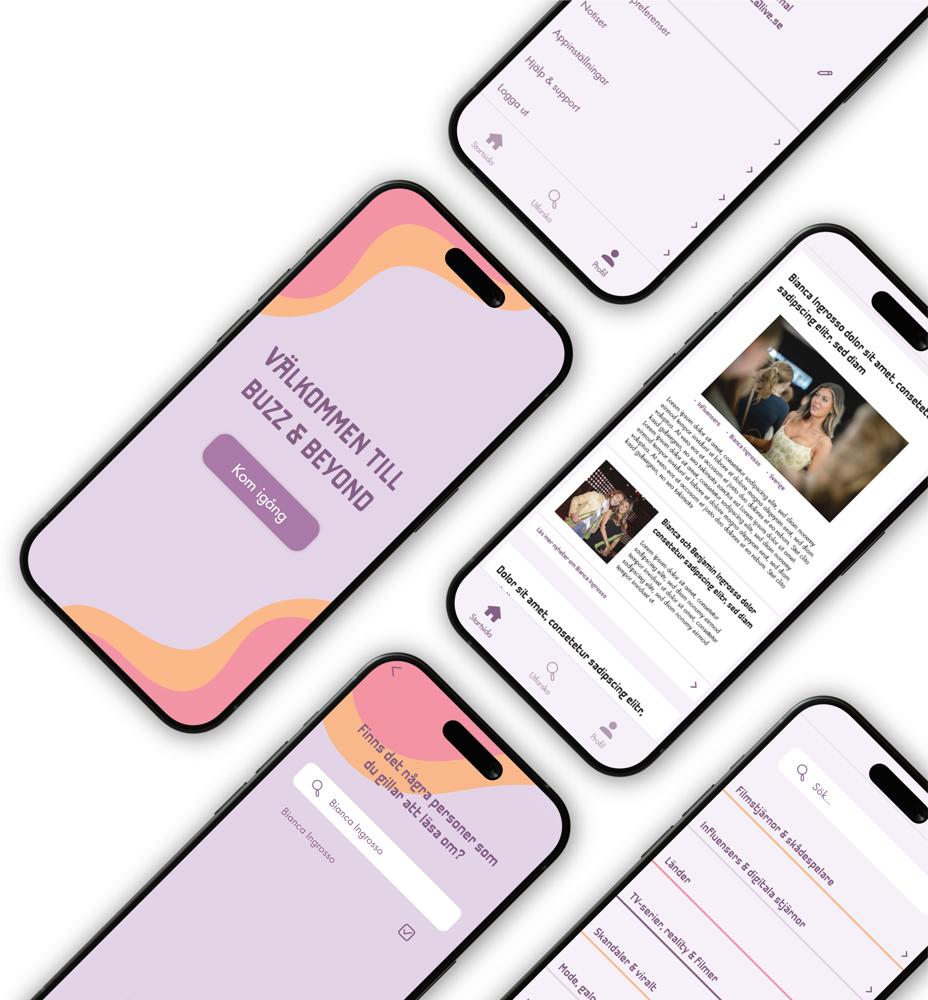
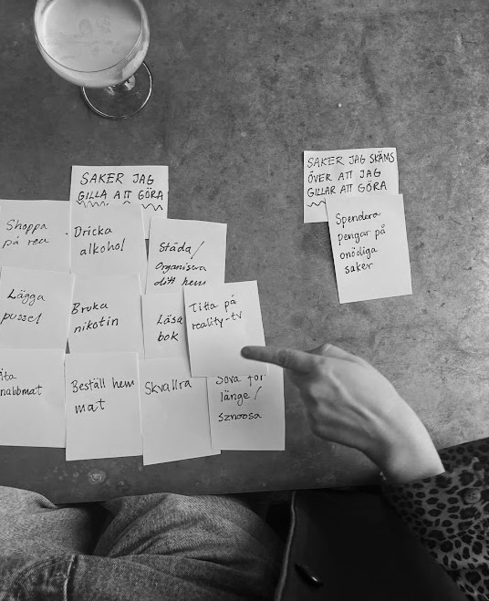
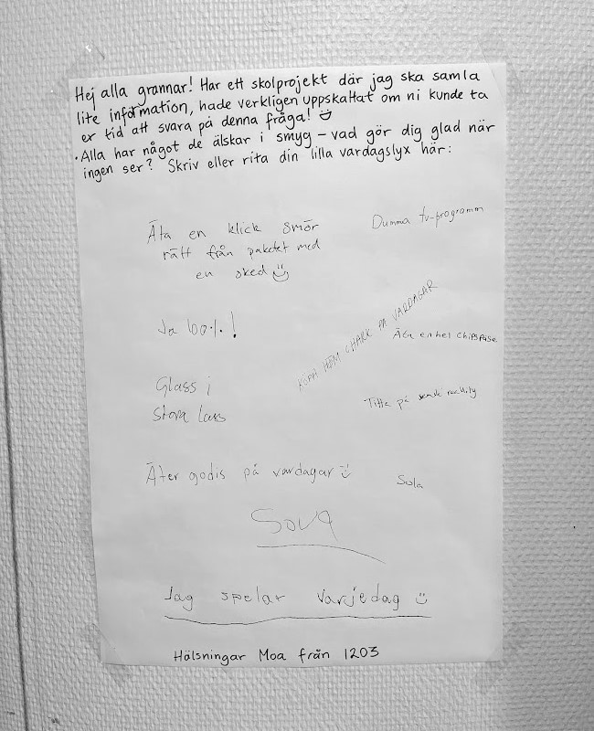
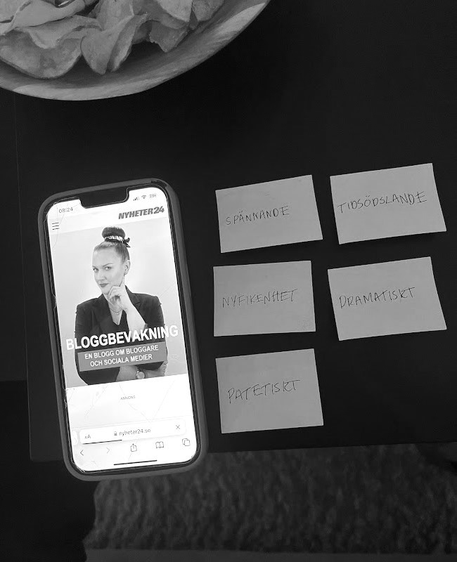
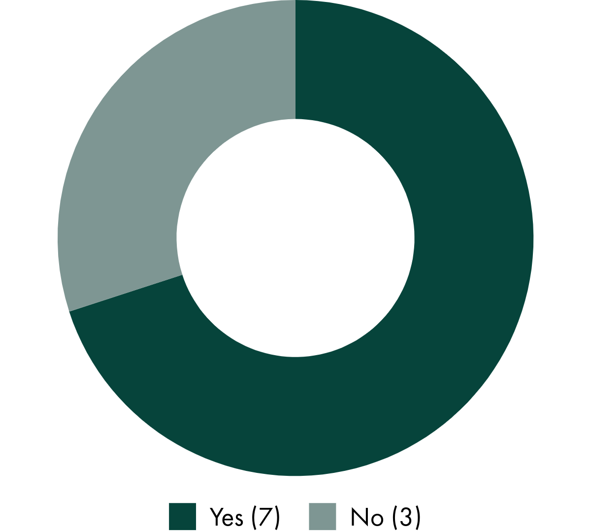

Buzz & Beyond is a mobile application that brings all the latest
gossip together on one platform. It allows users to curate their
media experience by choosing what entertainment content they
want to engage with, while avoiding endless scrolling. Perfect
for those who love entertainment media but value their time.
project duration:
5 weeks
12+ screens
tools:

about the project
This project was conducted during the autumn semester of 2024. The
goal was to explore participants’ guilty pleasures through
interactive engagement and to design a digital artifact that
simplifies and enhances their ability to indulge in these
activities. To uncover people's guilty pleasures, I utilized
approximately ten different design methods and exploratory
prototypes, including techniques such as graffiti walls, descriptive
adjectives, and card sorting.
card sorting

graffiti wall

descriptive adjectives

problem statement
Entertainment media consumption was identified as a guilty
pleasure by participants, seen as both exciting and difficult to
give up, yet also silly and overly time-consuming. Consumers often
feel they spend too much time engaging with entertainment content
but still want to stay informed. My goal was to design a solution
that simplifies content discovery, reduces time spent scrolling,
and maintains user engagement.
Do you feel you spend too much time on entertainment media?

prototypes of the application
I created two versions of the prototype during the design process.
The first was a basic prototype aimed at testing the core idea and
gathering user feedback on functionality and usability. Based on the
insights from this testing, I developed the final prototype,
refining the design and interactions to deliver a more polished and
user-friendly solution.
Initial prototype
Final prototype
conclusion
Buzz & Beyond simplifies the way users consume entertainment media,
balancing enjoyment with time efficiency. Through diverse design
methods, I uncovered the tension users feel between staying informed
and avoiding time-consuming scrolling. The app addresses this by
offering curated, personalized content and a streamlined experience.
This project demonstrates the value of user-centered design in
creating solutions that align with user needs, turning a guilty
pleasure into a guilt-free experience.